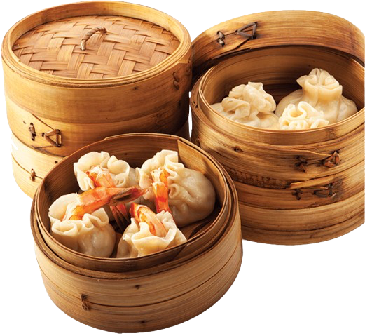

Dim Sum for Students: Where to Go & How to Order
Yum cha on a student budget: how ordering works, what to point at, and what it costs.
Yum cha is the thing you’ll do most with new friends. Here’s how to not look lost. Ordering works two ways: paper tick-sheets (easier if you don’t speak Cantonese) or push carts, where aunties wheel bamboo steamers around and you point. Carts are more fun.
First-time order
- Har gow (shrimp dumplings)
- Siu mai (pork and shrimp)
- Char siu bao (BBQ pork buns — steamed, not baked)
- Cheung fun (rice noodle rolls)
Two people, four dishes each, plus tea: around HK$120–180 total. Go Tuesday 2pm, not Sunday noon — same food, half the crowd.
One rule: when someone pours your tea, tap two fingers on the table to say thanks. I didn’t know this for three weeks.
